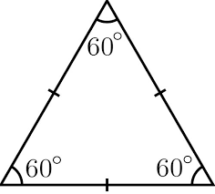
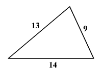

Equilateral Triangle: In geometry, an equilateral triangle is a triangle in which all three sides are equal. In the familiar Euclidean geometry, an equilateral triangle is also equiangular; that is, all three internal angles are also congruent to each other and are each 60°.
 An Isosoles Triangle:An isosceles triangle is a triangle with two equal sides. In the figure above, the two equal sides have length and the remaining side has length . This property is equivalent to two angles of the triangle being equal. An isosceles triangle therefore has both two equal sides and two equal angles.
An Isosoles Triangle:An isosceles triangle is a triangle with two equal sides. In the figure above, the two equal sides have length and the remaining side has length . This property is equivalent to two angles of the triangle being equal. An isosceles triangle therefore has both two equal sides and two equal angles.
Scarlene Triangle: A scalene triangle is a triangle that has three unequal sides, such as the one illustrated above.